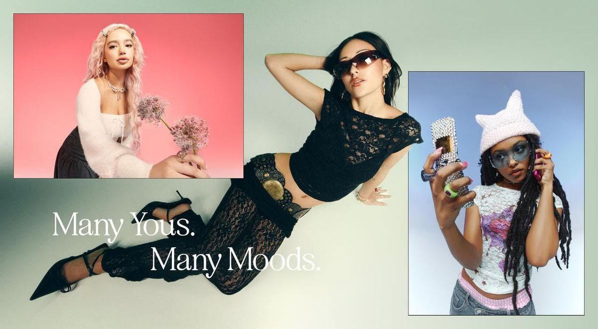
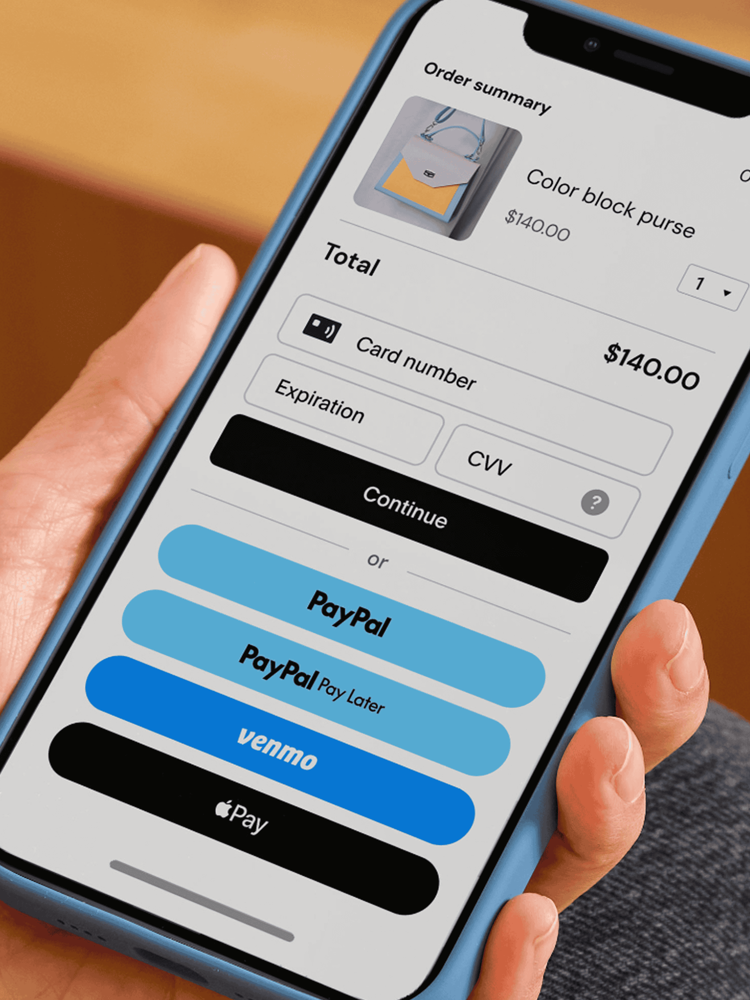
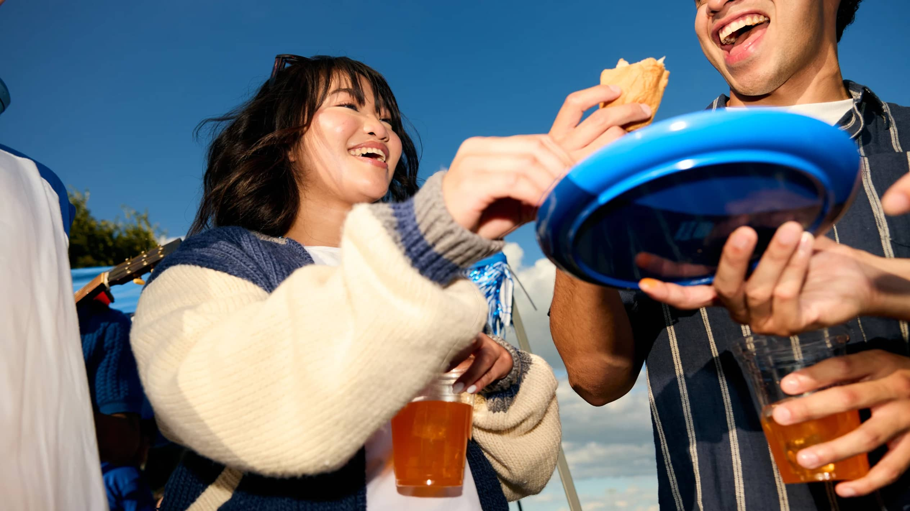
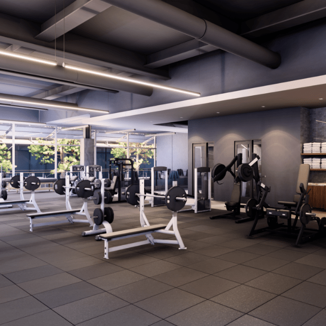
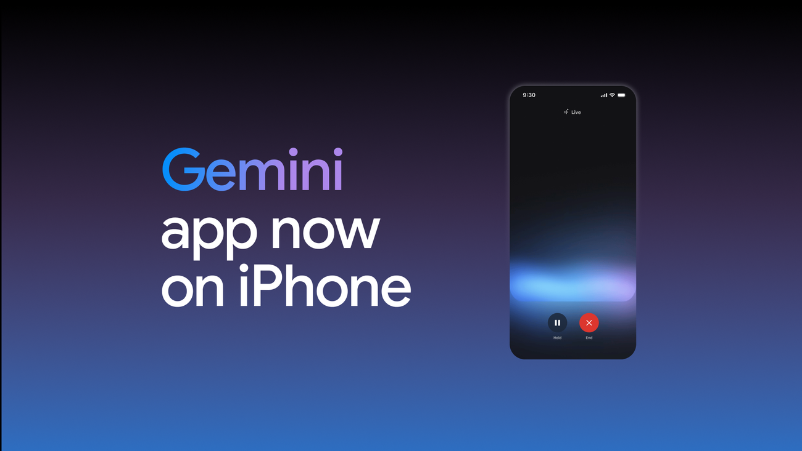
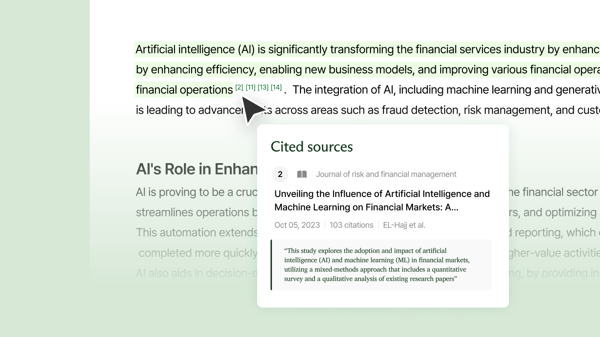

Supported 15+ global SMB launches across 40+ stakeholders. Built reporting tools, advanced paid-search initiatives, and audited 5,000+ webpages to improve discovery.
MangoBoost
Growth Marketing InternSep–Dec 2025
Making technical stories connect
Created 15+ summit marketing assets that generated 67K+ impressions. Used LinkedIn analytics and a website UX audit to sharpen messaging and inform the redesign.
Chime
Content Strategy InternMay–Aug 2025
Clearer answers, faster support
Audited 740+ knowledge-base assets and standardized content workflows for 2,500+ support agents. Searches per ticket fell 7.6% within 10 days.
UC Berkeley Life
Social Media Intern · Student Affairs CommunicationsCurrent
Student stories, campus moments, and life at Berkeley.
Layout preview · sample covers
1 / 4
@ucberkeleylifea day at Berkeleythumbnail placeholder
Campus stories
Sample video slot
@ucberkeleylifemeet the communitythumbnail placeholder
Student voices
Sample video slot
@ucberkeleylifewhat’s on this weekthumbnail placeholder
Campus events
Sample video slot
@ucberkeleylifethe little thingsthumbnail placeholder
Everyday moments
Sample video slot
company partnerships
the project files 📎
2024–2025
Contracted projects with companies and their teams.

Consumer insights
Cider
Project Manager · Aug–Dec 2025
Led a 10-person team researching Gen Z loyalty. Turned 500+ survey responses and social trends into retention and community recommendations.

Checkout experience
PayPal
Project Manager · Aug–Dec 2025
Led a 10-person team and 15 developer interviews. Translated Checkout onboarding and API friction into high-fidelity Figma prototypes.

Personal finance
Venmo
Product Research & Design Analyst · Mar–May 2025
Synthesized 1,000+ surveys and 30+ focus groups into feature priorities and Figma prototypes for a personal finance concept.

Campus activations
Equinox
Experiential Marketing Lead · Feb–May 2025
Coordinated two events with 1,300+ attendees each, generating hundreds of qualified leads and recommendations for future student activations.

AI & Gen Z
TikTok × Google Gemini
Marketing Strategy Consultant · Sep–Dec 2024
Used 500+ survey responses and 30 focus groups to develop TikTok-first campaign concepts, presented to senior brand leadership.
Culture & content
Skullcandy
Social Media Marketing Consultant · Sep–Dec 2024
Developed Gen Z positioning and biweekly social content. Analyzed 10+ performance KPIs to shape evergreen storytelling.

Student acquisition
Liner
Growth Marketing Analyst · Sep–Dec 2024
Acquired 350+ users through student campaigns, audience testing, and 15+ hours of live product demos and Q&A.